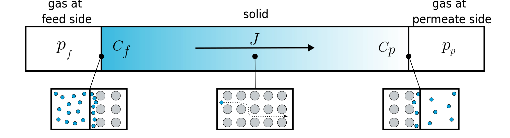

Permeation Tool
This tool has been developed to clarify and explain the physical phenomena of permeation.
On this web page, you'll find :
- Explanations, definitions and animations of this phenomena,
- A tool to determine the permeation coefficient (permeability) from experimental data,
- A unit converter to convert all the differents units you can find in paper about permeability,
- A tool to see the evolution of the permeate flow in cases of cracks, or not,
- A glossary and some usefuls ressources and references.
This tool has been developed by Joffrey Feltin as part of his engineering internship at TU Delft during summer 2023.
All the sources used to build this site can be found in the "Resources" tab.
What is Permeation?
Permeation is the process of fluid or gas movement through a barrier or solid material. It involves into several essential steps, including absorption, diffusion, and desorption.

Absorbtion :
During absorption, gas molecules are taken up or absorbed by the material's structure. This occurs when a gas comes into contact with the material, and some of its molecules become integrated within the material itself.The absorption of gases in metals is described by Henry’s law:
Diffusion :
Following absorption, diffusion takes place. Diffusion refers to the movement or spreading out of the absorbed gas molecules within the material. This movement occurs due to the random thermal motion of the gas molecules.The diffusion is described by Fick’s law:
Desorption :
Ultimately, the desorption stage occurs, where the absorbed gas molecules are released or desorbed from the material. This can happen when there is a lower concentration of the gas on the other side of the material or due to changes in temperature or pressure.The desorption of gases in metals is described by Henry’s law:
By combining these equations, we have: \(J = D\cdot S \cdot \dfrac{\partial p}{\partial x}\)
Defining the permeability \(P:=DS\), one obtains: \(J = P \cdot \dfrac{\partial p}{\partial x}\)
The permeability expresses the material ability to allow gases permeate through a material, while permeation refers to the actual process of substances passing through a material. Permeability determines the ease of permeation, and permeation is the result of substances diffusing or flowing through a material.
Permeability is also sometimes referred as the permeation coefficient and is expressed in SI units of \(\dfrac{mol \cdot m}{s \cdot m^2 \cdot Pa}\) (it is also sometimes expressed in \(\dfrac{cm^3_{STP} \cdot m}{s \cdot m^2 \cdot Pa}\) ).
\(\Rightarrow cm^3_{STP}\) (or \(scc\)) is standard cubic centimeter, a mass unit. It represents the mass of a gas contained in a volume of 1 cubic centimetre at standard temperature and pressure.
How to determine permeation?
When it comes to studying permeation, there are two commonly used experimental methods to determine its value. These methods are mass spectrometry and pressure sensing.
How it works?
Mass Spectrometer
One way to determine permeation is by using mass spectrometry. Mass spectrometry can quantify the concentration of molecules that have permeated through the sample. By analyzing the mass spectrum of the collected samples before and after the permeation experiment, we can determine the change in concentration of specific molecules.
How it works ?
This method involves placing the sample for which we want to determine permeation between two tanks: one under high pressure and the other under low pressure. Certain molecules will permeate from the first tank to the second tank through our sample. Consequently, the concentration in the second tank will vary over time.
In the mass spectrum, we observe peaks corresponding to different ions. Each peak represents an ion with a specific m/z value. By comparing the mass spectrum of the permeated samples to a reference spectrum of the original source, we can identify the peaks that correspond to the permeating molecules. The intensity of the peaks in the mass spectrum is proportional to the concentration of the corresponding molecules. By comparing the peak intensities between different samples and using appropriate calibration standards, it is possible to quantitatively determine the concentration of permeating molecules over time.
By measuring this change in concentration over time, we can calculate the permeation rate coefficient of the sample by using the parameters of the experimental device.
All this is represented and explained by the animation below :
Calculation methods:
We know that the concentration \(C\) of the right tank, which is under low pressure is equal to:
\(C = \dfrac{n}{V_{right-tank}}\)
In this setup, both tanks have constant volume. As a result, only the concentration (\(C\)) and the number of moles (\(n\)) will change over time.
Hence, we can express the relationship as follows:
\(\dfrac{dC}{dt} = \dfrac{dn}{dt} \cdot \dfrac{1}{V_{right-tank}}\)
\(\Rightarrow\dfrac{dn}{dt} = \dfrac{dC}{dt}\cdot V_{right-tank} \)
Now we have a relation between our experimental data: the change of concentration over time, and the variation of the mole number over time.
It is now possible to determine the permeation coefficient value. As a reminder, permeation coefficient is in \(\dfrac{𝑚𝑜𝑙}{𝑠} \cdot \dfrac{m}{m^2 \cdot Pa}\)
Permeation coefficient is determined by multiplying our variation of the mole number over time by the sample thickness and dividing by the sample surface area and the pressure difference between the two tanks.
\(Permeability = \dfrac{dC}{dt} \cdot V_{right-tank} \cdot \dfrac{Thickness}{Area \cdot (P_{left\;tank} - P_{right\,tank}) } \)
Calculation tool
| Concentration variation over time | Sample | Pressure | Volume of the tank under low pressure | Molar Weight (for concentration conversion) |
|||||||||
|---|---|---|---|---|---|---|---|---|---|---|---|---|---|
| Thickness | Area | Left Tank | Right Tank | ||||||||||
| g/mol | |||||||||||||
| Permeation coefficient | |
|---|---|
| \(\dfrac{𝑚𝑜𝑙\cdot𝑚}{𝑠\cdot𝑚^2\cdot𝑃𝑎}\) | |
| Common Molar Masses | |
|---|---|
| Substance | Molar Mass (g/mol) |
| Hydrogen (H2) | 2.02 |
| Helium (He) | 4.00 |
| Water (H2O) | 18.015 |
| Oxygen (O2) | 32.00 |
| Carbon Dioxide (CO2) | 44.01 |
| Methane (CH4) | 16.04 |
| Nitrogen (N2) | 28.02 |
| Ozone (O3) | 47.99 |
Pressure Sensor
One of the most common way to determine permeation is by using a pressor sensor.
How it works?
This method involves placing the sample for which we want to determine permeation between two tanks: one under high pressure and the other under low pressure. Certain molecules will permeate from the first tank to the second tank through our sample. Consequently, the pressure in the second tank will vary over time. By measuring this change in pressure over time using a pressure sensor, we can apply the laws of perfect gases and utilize the parameters of the experimental device to calculate the permeation rate of the sample
All this is represented and explained by the animation below :
Calculation methods :
We begin with the application of the law of perfect gases, to our tank on the right, which is under low pressure and equipped with a pressure sensor.
\(PV = nRT\)
In this setup, both tanks have constant volume and temperature. As a result, only the pressure (\(P\)) and the number of moles (\(n\)) will change over time.
Hence, we can express the relationship as follows:
\(\Rightarrow\dfrac{dP}{dt}V = \dfrac{dn}{dt}RT\)
\(\dfrac{d}{dt}(PV) = \dfrac{d}{dt}(nRT)\)
\(\Rightarrow\dfrac{dn}{dt} = \dfrac{dP}{dt}\cdot \dfrac{V}{RT}\)
Now we have a relation between our experimental data: the change of pressure over time, and the variation of the mole number over time.
It is now possible to determine the permeation coefficient value. As a reminder, permeation coefficient is in \(\dfrac{𝑚𝑜𝑙}{𝑠} \cdot \dfrac{m}{m^2 \cdot Pa}\)
Permeation coefficient is determined by multiplying our variation of the mole number over time by the sample thickness and dividing by the sample surface area and the pressure difference between the two tanks.
\(Permeation = \dfrac{dP}{dt} \cdot \dfrac{V}{RT} \cdot \dfrac{Thickness}{Area \cdot (P_{left\;tank} - P_{right\,tank}) } \)
Calculation tool
| Pressure variation over time | Sample | Pressure | Volume of the tank under low pressure | Temperature | |||||||||
|---|---|---|---|---|---|---|---|---|---|---|---|---|---|
| Thickness | Area | Left Tank | Right Tank | ||||||||||
| Permeation coefficient | |
|---|---|
| \(\dfrac{𝑚𝑜𝑙\cdot𝑚}{𝑠\cdot𝑚^2\cdot𝑃𝑎}\) | |
Unit Converter App
Permeability Units Converter
As a reminder, permeability is also sometimes referred as the permeation coefficient and is expressed in \(\dfrac{mol \cdot m}{s \cdot m^2 \cdot Pa}\) or in \(\dfrac{cm^3_{STP} \cdot m}{s \cdot m^2 \cdot Pa}\).
The intriguing outcome is that this unit simplifies to "seconds". The real complication arises from the diversity of values selected for Mass, Length, Area, Time, and Pressure by different people, leading to the existence of thousands of potential unit combinations.
That's why this tool allows you to convert these units, in order to be able to compare the different values that can be found online or in the literature.
| Mass | Length | Area | Time | Pressure | ||
| From | ||||||
| To |
| Parameters | |
|---|---|
| Molar Weigth (g/mol) |
|
| Standard Temperature (K) |
|
| Standard Pressure (Pa) |
|
| Common Molar Masses | |
|---|---|
| Substance | Molar Mass (g/mol) |
| Hydrogen (H2) | 2.02 |
| Helium (He) | 4.00 |
| Water (H2O) | 18.015 |
| Oxygen (O2) | 32.00 |
| Carbon Dioxide (CO2) | 44.01 |
| Methane (CH4) | 16.04 |
| Nitrogen (N2) | 28.02 |
| Ozone (O3) | 47.99 |
Evolution of the permeate flow
When looking into permeation studies, an interesting aspect to consider is how the flow of the gas changes over time.
This observation not only piques curiosity but also helps us determine a key factor : the diffusion coefficient.
In an ideal scenario, where our sample exhibits perfect conditions without any cracks, only the process of diffusion is at play.
This principle is rooted in Fick's law, which governs the behavior of diffusion. However, if our sample does exhibit cracks, the
applicability of Fick's law diminishes. In this scenario, the permeant substance will simply seep through these cracks, rendering
the diffusion of the permeant comparatively inconsequential when contrasted with the permeant's leakage. To effectively characterize
the permeant flow in cases involving cracked samples, we introduce the Knudsen number. This parameter plays a pivotal role in
understanding and quantifying the flow behavior of the permeant under these specific circumstances.
Fick's Law Curve (ideal conditions, without cracks):
In ideal conditions, if our sample presents no cracks, only the process of diffusion defined by Fick’s Law take place.
As a reminder, here is how diffusion is described by Fick’s law:
The belowing tool enables you to create a graph showing the theoretical flow \((J)\) over time based on Fick's law, and gives you the ability to adjust its parameters interactively.
Hypothesis:
The concentration at the feed side, \(x=0\), and permeate side, \(x=l\),
may be termed \(C_f\) and \(C_p\), respectively. Initially,
the concentration is zero throughout the material: \(C(x,t < 0) =0 \). At \(t=0\),
a constant concentration is applied at the feed side: \(C_f(t\ge0)= C_f^0\).
Owing to this change of charge, a flow from the feed side to the permeate side starts and \(C_p\) changes with time.
Crank* calculated the flux at the permeate side, if \(C_p \simeq 0\) and \(C_p \le C_f\) for all \(t\):
Schultheiß - 2007 - Permeation Barrier for Lightweight Liquid Hydrogen Tanks
*J. Crank. The Mathematics of Diffusion. Clarendon Press, Oxford, 1970.
Unperfect conditions (presence of cracks) :
If our sample exhibits some cracks, the applicability of Fick's law diminishes. the permeant substance will simply seep through these cracks, rendering the diffusion of the permeant comparatively inconsequential when contrasted with the permeant's leakage. To effectively characterize the permeant flow in cases involving cracked samples, we introduce the Knudsen number. This parameter plays a pivotal role in understanding and quantifying the flow behavior of the permeant under these specific circumstances.
The Knudsen number (Kn) is a dimensionless number used in fluid dynamics and gas dynamics to characterize the
behavior of a gas flow when the mean free path of the gas molecules becomes comparable to the characteristic length
of the flow.
The Knudsen number is defined as the ratio of the mean free path \((\lambda)\) of
gas molecules to a characteristic length \((L)\) of the flow:
- \(\lambda\) is the mean free path of gas molecules. It's the average distance a gas molecule travels between collisions with other molecules. In simple terms, it represents the distance a molecule can move before it encounters another molecule.
- \(L\) is a characteristic length of the flow, which could be the size of an object or the length scale over which the flow is occurring. In our case, it represent the critical length of the microcrack.
Determination of the mean free path \(\lambda\) :
- \(\lambda\) is the mean free path. \([m]\)
- \(\mu\) is the gas dynamic viscosity. \([Pa.s]\)
- \(p\) is the pressure. \([Pa]\)
- \(R\) is the gas constant. \((8,314 J.K^{-1}.kmol^{-1})\)
- \(T\) is the temperature. \([K]\)
- \(M\) is the gas molar mass of the molecule. \([kg.kmol^{-1}]\)
- \(Na\) is the Avogadro number. \((6.022 \cdot 10^{-26} kmol^{-1})\)
- \(dm\) is the molecule diameter. \([m]\)
The Knudsen number helps determine the nature of gas flow in various regimes:
-
Knudsen Flow \((0.1 < Kn < 10)\):
The gas flow is in the Knudsen flow regime. In this regime, the mean free path is much larger than the characteristic length, and gas molecules move independently with minimal interactions. Traditional fluid dynamics equations break down, and molecular effects dominate the behavior of the flow.
-
Slip Flow \((0.001 < Kn < 0.1)\):
The gas flow is in the slip flow regime. In this case, the mean free path becomes comparable to the characteristic length of the flow, and the behavior of the gas molecules at the surface of the object becomes significant. Slip conditions at surfaces, where gas molecules can slip along the surface, need to be taken into account.
-
Continuum Flow \((Kn < 0.001)\):
The gas behaves as a continuum, meaning that the interactions between gas molecules dominate over their individual motion. In this regime, the gas can be described using macroscopic equations like the Navier-Stokes equations.
The belowing tool enables you to create a graph showing the evolution of the Knudsen number for Hydrogen according to the critical length of the microcrack and gives you the ability to adjust its parameters interactively.
Glossary
-
Absorption:
The stage of permeation where gas molecules are taken up or absorbed by the material's structure.
-
Concentration Gradient:
The difference in concentration of a substance between two points in space, driving the movement of substances by diffusion.
-
Continuum Flow:
The gas flow regime where gas interactions between molecules dominate over their individual motion, allowing macroscopic equations like the Navier-Stokes equations to describe the gas behavior.
-
Desorption:
The stage of permeation where absorbed gas molecules are released from the material, often due to changes in concentration, temperature, or pressure.
-
Diffusion:
The stage of permeation where absorbed gas molecules spread out within the material due to random thermal motion.
-
Flux:
The rate at which a substance passes through a given area per unit of time, often used to describe the flow of permeate through a membrane.
-
Knudsen Diffusion:
A mechanism of diffusion that occurs when the mean free path of molecules is comparable to or larger than the pore size of a porous material, leading to unique diffusion behavior.
-
Knudsen Flow:
The gas flow regime where the mean free path of gas molecules is much larger than the characteristic length, leading to molecular effects dominating the flow behavior.
-
Knudsen Number (Kn):
A dimensionless number used in fluid dynamics and gas dynamics to characterize gas flow behavior when the mean free path of gas molecules becomes comparable to the characteristic length of the flow.
-
Mass Transfer:
The movement of mass (substance) from one location to another, often driven by concentration gradients.
-
Permeability:
A measure of how easily a substance can permeate through a material, often quantified as the permeability coefficient.
-
Permeability Coefficient:
A numerical value that quantifies the rate of permeation of a substance through a material.
-
Permeation:
The process of fluid or gas movement through a barrier or solid material. It involves absorption, diffusion, and desorption.
-
Solubility:
The ability of a substance to dissolve in a solvent or another substance, which can affect the rate of permeation.
-
Sorption:
The process of a material absorbing or adsorbing a substance, leading to changes in the material's properties or structure.
-
Standard Cubic Centimeter (\(cm^3_{STP}\) or \(scc\)):
A unit of measurement used to quantify mass. It represents the mass of a gas contained in a volume of 1 cubic centimetre at standard temperature and pressure.
-
Standard Temperature:
The defined temperature condition used as a reference point in various scientific measurements and calculations. Standard temperature can be set at 0 degrees Celsius (0°C) or 273.15 Kelvin (K), but it is also sometimes defined as the ambient temperature, typically around 20 degrees Celsius (20°C). The specific standard temperature may vary depending on the context and application.
-
Standard Pressure:
The defined pressure condition used as a reference point in scientific measurements and calculations. Standard pressure is typically set at 1 atmosphere (atm), which is equivalent to 101.325 Pascals (Pa) or 1013.25 millibars (mbar). It represents the average atmospheric pressure at sea level under normal conditions.
Resources and References
Scientific Papers and Articles
-
Analytical and numerical approach to determine effective diffusion coefficients for composite pressure vessels
Authors: Ebermann et al. (2022)
-
Permeability of carbon fiber PEEK composites for cryogenic storage tanks of future space launchers
Authors: Flanagan et al. (2017)
-
Gas permeability of CFRP cross-ply laminates with thin-ply barrier layers under cryogenic and biaxial loading conditions
Authors: Hamori et al. (2020)
-
Permeation Barrier for Lightweight Liquid Hydrogen Tanks
Author: Schultheiß (2007)
-
Methodology for the identification of hydrogen gas permeation paths in damaged laminates
Authors: Hosseini et al. (2022)
-
Hydrogen permeability of thermoplastic composites and liner systems for future mobility applications
Authors: Condé-Wolter et al. (2023)
Websites
-
Practical Coatings - Permeability
Description: This website provides practical information about permeability, offering valuable insights into the topic.
-
Pfeiffer Vacuum - Leak Detection Know-How
Description: This resource explains leak rate units and calibrated leaks, which are relevant to the study of permeation and leakage.
-
AMETEK MOCON - Learn about permeation
Description: This website provide practical information about permeation. It also contains a FAQ about permeation and a glossary of terms related to permeation.
-
Wikipedia - Permeation
Description: Wikipedia provides an overview of permeation, making it a useful starting point for research and learning.
Acknowledgments
I would like to acknowledge the contributions of members from the Department of Aerospace Manufacturing Technologies (AMT) at TU Delft for their valuable insights and research. Their work has been instrumental in the development of this permeation tool.